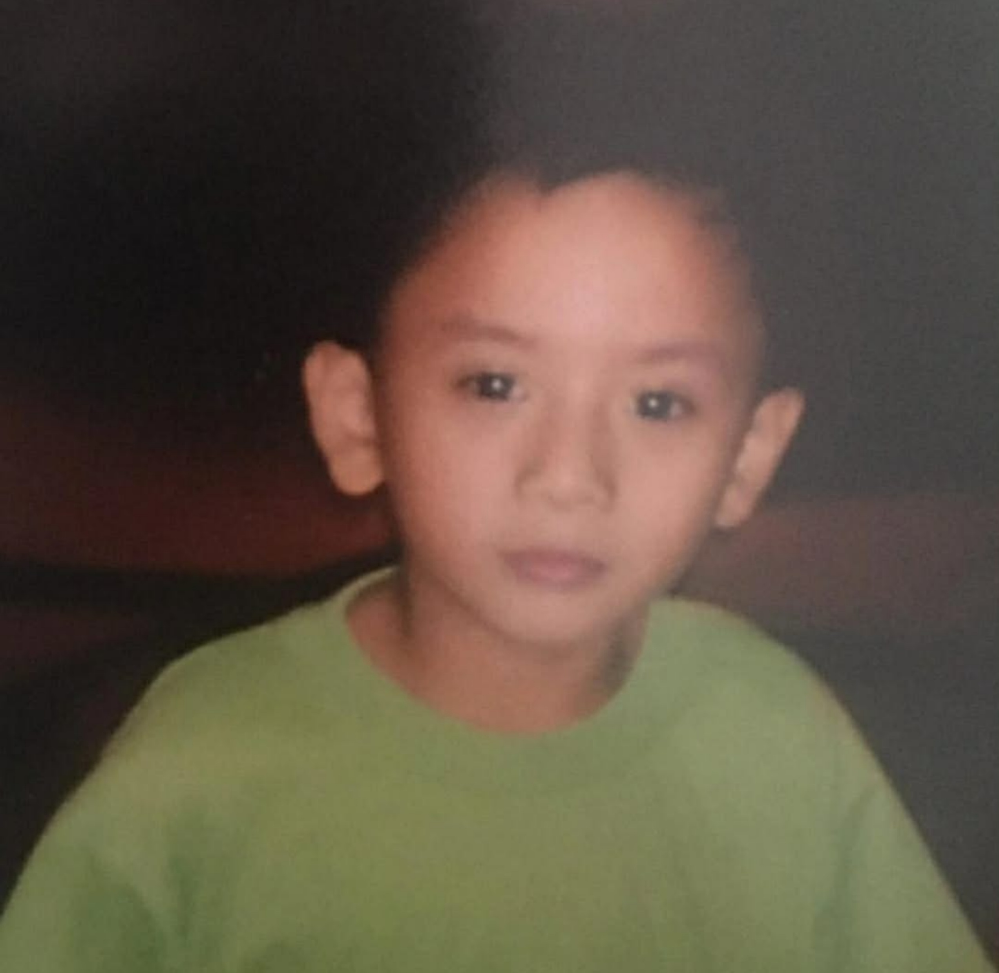

Hi, I'm John Vincent.
Turning Ideas into Impact.
BS Marketing

A bit of my story
I'm a 2nd-year BS Marketing student at Mapúa Malayan Colleges Laguna, passionate about combining creative strategy with market insights. Outside of academics, I express my creativity through dancing, love experimenting with new recipes in the kitchen, and unwind by diving into video games. Driven by curiosity and innovation, I'm always eager to take on new challenges and turn fresh ideas into impactful marketing solutions.
Interests
Dancing, Cooking, Playing Video Games
Career Goals
Driven by a passion for strategic positioning and consumer connection, my goal as an aspiring marketing professional is to translate market insights into creative, results-driven campaigns. I aim to leverage brand strategy, digital execution, and consumer data to help businesses build authentic audience connections and drive sustainable growth.
What I bring to the table
Technical
Soft Skills
- Teamwork: Comfortable collaborating across roles to hit a shared deadline.
- Leadership: Led a project team during our capstone planning phase.
- Communication: Clear in both technical writing and presentations.
- Adaptability: Quick to pick up new tools and shift plans when needed.
Where I've shown up
Grade 7 Intramurals Cheer Dance
Joined the competition.
CheerdanceGrade 8 Buwan ng Wika Folk Dance
Joined the competition and won First Place.
Folk DanceMITL Streetdance
Joined the competition.
StreetdanceLet's connect!
John Vincent N. Laurel
Email: jvlaurel0923@gmail.com